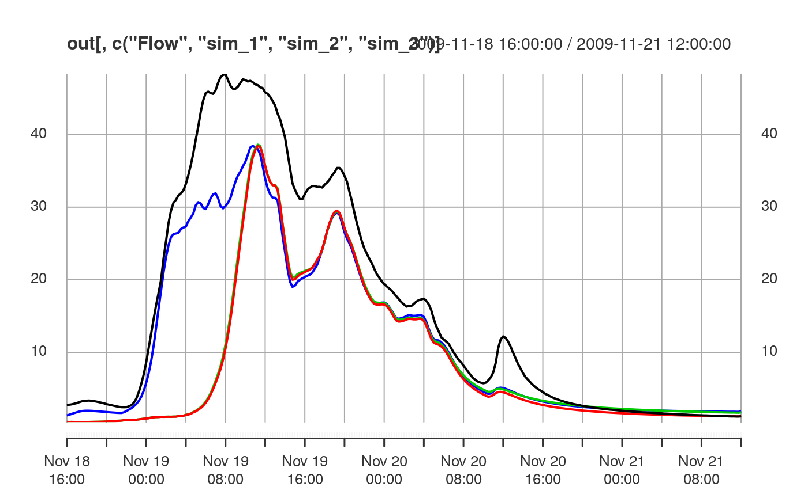

The purpose of this vignette is to provide an outline of the steps needed to perform a Dynamic TOPMODEL simulation and introduce the formats of the data input and returned.
The data used in this example comes from Brompton and is contained within the package and can be loaded with
library(dynatop)
#> Loading required package: xts
#> Warning: package 'xts' was built under R version 3.5.3
#> Loading required package: zoo
#> Warning: package 'zoo' was built under R version 3.5.3
#>
#> Attaching package: 'zoo'
#> The following objects are masked from 'package:base':
#>
#> as.Date, as.Date.numeric
#> Loading required package: deSolve
#> Warning: package 'deSolve' was built under R version 3.5.3
data("brompton")which returns the following variables
names(brompton)
#> [1] "model" "rain" "pet" "qobs"In the following # The model structure A dynamic TOPMODEL is described in a list object. The list has the following elements
names(brompton$model)
#> [1] "hillslope" "channel" "param" "Wex"
#> [5] "Wsat" "Fex" "Fsat" "point_inflow"
#> [9] "gauge"which are described in associated vignette. The dynatopGIS package can be used for constructing models.
The structure of the model can be tested:
check_model(brompton$model)
#> Error in check_model(brompton$model): Saturated flow redistribution fractions sum to greater then 1 for HRUs: 40, 90, 100In this case we can see multiple warning messages. The warnings relate to the redistribution of the flows from the hill slope HRUs. In all cases the sum of the fractions describing the destination of the flows is greater then 1, meaning that flow is artificially generated during the redistribution. This can be checked manually by
model <- brompton$model
current_total_frac_sat <- colSums( rbind(model$Wsat,model$Fsat) )
current_total_frac_ex <- colSums( rbind(model$Wex,model$Fex) )We can readily fix this:
for(ii in names(current_total_frac_sat[current_total_frac_sat>1])){
model$Wsat[,ii] <- model$Wsat[,ii]/current_total_frac_sat[ii]
model$Fsat[,ii] <- model$Fsat[,ii]/current_total_frac_sat[ii]
}
for(ii in names(current_total_frac_sat[current_total_frac_ex>1])){
model$Wex[,ii] <- model$Wex[,ii]/current_total_frac_ex[ii]
model$Fex[,ii] <- model$Fex[,ii]/current_total_frac_ex[ii]
}and repeating the check does not produce an error:
check_model(model)
#> NULLThe parameter values are stored in the parameter vector model$parameters. Each parameter value has a unique name. In the current model the parameters are all set to their default values:
print(model$param)
#> srz_max_default srz_0_default ln_t0_default m_default
#> 0.050 0.990 19.000 0.004
#> td_default tex_default v_ch_default
#> 20.000 100.000 10.000The relationship between the parameters and the HRUs are given in the columns of the HRU tables e.g.
## unsaturated zone time constant
print( model$hillslope[,c('id','td')])
#> id td
#> 2 30 td_default
#> 3 40 td_default
#> 4 50 td_default
#> 5 60 td_default
#> 6 70 td_default
#> 7 80 td_default
#> 8 90 td_default
#> 9 100 td_defaultAltering parameter values requires changing there values in the parameter vector. For this catchment all HRU have the same parameter values. This could be altered by changing parameter names in the HRU table and adding these parameters to the parameter vector.
In this case we change the parameter vectors to me more representative of the catchment
The input to the model is expected to take the form of an xts object with constant time step whose column names are found in the ‘precip_input’ and ‘pet_input’ columns of the HRU table in the model. Helpful functions for creating and manipulating xts objects can be found [here]{http://rstudio-pubs-static.s3.amazonaws.com/288218_117e183e74964557a5da4fc5902fc671.html}
The precipitation and potential evapotranspiration (PET) inputs for Brompton are contained the brompton$rain and brompton$pet variables. However while the PET input comes on a 15 minute time step
head(brompton$pet)
#> pet
#> 2012-09-01 00:00:00 0
#> 2012-09-01 00:15:00 0
#> 2012-09-01 00:30:00 0
#> 2012-09-01 00:45:00 0
#> 2012-09-01 01:00:00 0
#> 2012-09-01 01:15:00 0the precipitation is on a courser hourly time step
head(brompton$rain)
#> Warning: timezone of object (GMT) is different than current timezone ().
#> rain
#> 2012-09-01 00:00:00 0
#> 2012-09-01 01:00:00 0
#> 2012-09-01 02:00:00 0
#> 2012-09-01 03:00:00 0
#> 2012-09-01 04:00:00 0
#> 2012-09-01 05:00:00 0The resample_xts function can be used to alter the rainfall to the correct time step
rain <- resample_xts(brompton$rain, dt = 15/60)
#> Warning in resample_xts(brompton$rain, dt = 15/60): Irregularly spaced time
#> series supplied to resample_xts - proceding with modal timestep, results
#> are questionableThese series can then be merged, to give single xts object
Let’s now check this observed data
check_obs(obs, unique( unlist(model$hillslope[,c("precip_input","pet_input")]),
unlist(model$channel[,c("precip_input","pet_input")])))
#> Error in check_obs(obs, unique(unlist(model$hillslope[, c("precip_input", : There are non finite values in the required time seriesThe check fails with a warning since there are non-finite values in the data. This requires more detailed investigation but as a simple fix
## replace all non finite values with 0
obs[!is.finite(obs)] <- 0
check_obs(obs, unique( unlist(model$hillslope[,c("precip_input","pet_input")]),
unlist(model$channel[,c("precip_input","pet_input")])))
#> $step
#> [1] 0.25
#>
#> $n_sub_step
#> [1] 1
#>
#> $sub_step
#> [1] 0.25From the return of check_obs we can see the time step of the data and default number of sub time steps used in the model evaluation which is discussed later.
The model can be run with the data using the dyantop command. For a event in November 2012 the model can be run with the command
## select the event period
event_period <- "2012-11-23 12:00::2012-12-01"
## recharge rate for initialization
initial_recharge <- as.numeric(obs["2012-11-23 12:00",'qobs'])
## running the model
sim_1 <- dynatop(model,obs[event_period,],initial_recharge)The returned object from dynatop is a list with two elements
names(sim_1)
#> [1] "model" "channel_input"
names(sim_1$model)
#> [1] "hillslope" "channel" "param" "Wex"
#> [5] "Wsat" "Fex" "Fsat" "point_inflow"
#> [9] "gauge" "states"
head(sim_1$channel_input)
#> Warning: timezone of object (GMT) is different than current timezone ().
#> 1
#> 2012-11-23 12:00:00 0.8795540
#> 2012-11-23 12:15:00 0.9926841
#> 2012-11-23 12:30:00 1.0690530
#> 2012-11-23 12:45:00 1.1246788
#> 2012-11-23 13:00:00 1.1669022
#> 2012-11-23 13:15:00 1.1996438which are an xts object of the flows to the channel HRUs at each time step and the model passed to the call augmented with the final states of the simulation.
In the above simulation the model was initialized using the flow at the start of the event and used the default time step, which is the time step of the input data. Sub stepping, that is using a finer numeric time step then the data can improve the stability and quality of the simulations. The <> parameter of the dynatop function can be used to implement this. For example
sim_2 <- dynatop(model,obs[event_period,],initial_recharge,sim_time_step=5/60)performs the same simulation with a 5 minute time step.
The output states of a simulation can be used to initialize the a subsequent simulation. We note in doing this that no checks are made of the simulation times periods or of the time steps used. For example
sim_3 <- dynatop(sim_1$model,obs[event_period,],sim_time_step=5/60,use_states=TRUE)The effects of the different implementations can be seem in the following graph. Note that the discrepancy between the simulations and observed data is due in part to the absence of any channel routing.
out <- merge( merge( merge(obs,sim_1$channel_input),
sim_2$channel_input),
sim_3$channel_input)
names(out) <- c(names(obs),'sim_1','sim_2','sim_3')
out$qobs <- out$qobs*sum(model$hillslope$area)/3600
plot(out[event_period,c('qobs','sim_1','sim_2','sim_3')])